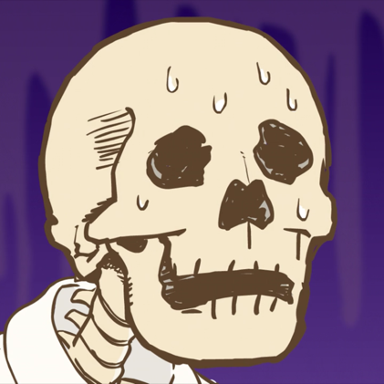

Wyn Price Wyn Price#0001
Wyn Price is the DumbCode programming mastermind. His efforts include programming the Mods, and the backend of the new DumbCode Studio.
Our Team
These are the members of DumbCode's team. They bring the projects you see to life.

BrownBoiWonder Brownboiiwonder#0357
BrownBoiWonder is one of the teams' modelers and the project organizer. Without BrownBoiWonder, the project team would not be all in the same place working on the projects you know and love.

NeusFear @NeusFear#5173
NeusFear is the team's Web Developer. His primary responsibilities are to develop and keep the website updated; among other random things.

Hyper @Hyper#5603
Hyperion is the main animator of DumbCode's mod Project: Nublar. His effors have brought to life most of the entities you've seen in our mods.

Harvey @TheHarvNut#6659
Harvey is one of DumbCode's Modelers and one of its graphic design artists. His efforts mainly include modeling entities and creating promotional material for DumbCode's species showcases!

Maz @Mazikeen#7846
Mazikeen is one of Project Nublar's texturers. They are usually one of the first people to work on a texture for the mods' entities and make adjustments as the texture progresses through it's lifecycle.

Bastion @Bastion21#1808
Bastion is one of the talented modelers on our DumbCode team. His model contributions often get the ball rolling on new creatures to build up a backlog of features to be added in the future.
Brotat @Brotat#7369
Brotat is the team's biggest hypeman. His contributions to the team include machine textures and the occasional block model too.

Lustria LordofLustria#5475
Lustria is one of the team's texture artists. They've done a lot of the mod's earliest textures and got the ball rolling on the look of the mods.

RaptorWhisper @RaptorWhisper#7681
RaptorWhisper is one of the teams' animators and they have also contributed to the sounds and block models of early development.

Gegy Gegy#9970
Gegy was one of the core contributors to DumbCode's Library. Her contributions are vital to the functionality of the mod and we're glad she's on call for future endeavors.

Chucho weastian#5280
Chucho is the teams' concept artist. When references from the movies arent enough to build a model or texture from, chucho drew concept art for the entities. They also created the twitter banner.

Wolfgank Wolfgank#6575
Wolfgank is one of the team's modelers, animators, and texture artists. He's helped get the ball rolling on the first few dinosaur models such as the Dilo.

Floofhips High Priestess Gabagool#8727
Yogabagaba here is in charge of working on the many GUIs, item textures for dino drops, fossils, and much more. She additionally works on plants that will be sure to populate many a player's dino paddocks.

Cody Cody#6692
One of the OG Dumbcode texture artists and modelers. His greatest contribution is the original tyrannosaur's textures which served as the foundation for the current model.